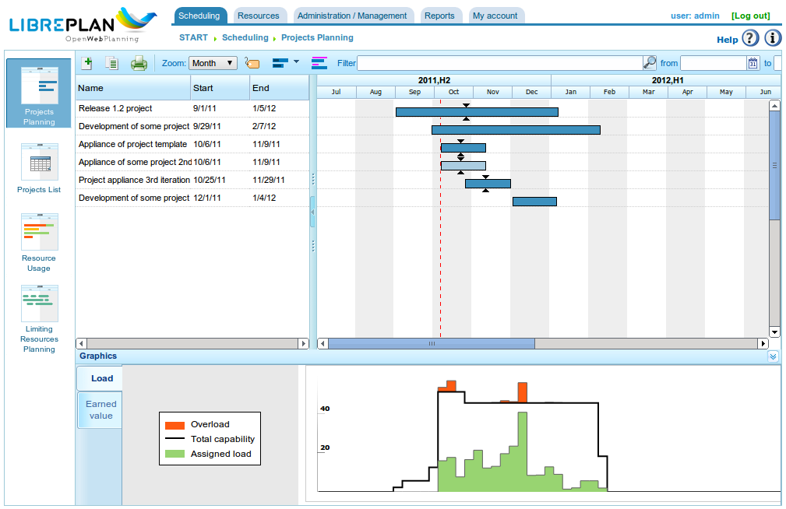

Introdução
Contents
Este documento descreve as funcionalidades do LibrePlan e fornece informações ao usuário sobre como configurar e utilizar a aplicação.
O LibrePlan é uma aplicação web de código aberto para planejamento de projetos. O seu principal objetivo é fornecer uma solução abrangente para o gerenciamento de projetos empresariais. Para qualquer informação específica de que necessite sobre este software, por favor entre em contato com a equipe de desenvolvimento em http://www.libreplan.com/contact/

Visão Geral da Empresa
Visão Geral da Empresa e Gerenciamento de Visualizações
Conforme mostrado na tela principal do programa (ver a imagem anterior) e na visão geral da empresa, os usuários podem ver uma lista de projetos planejados. Isso permite que eles compreendam o status global da empresa no que diz respeito a pedidos e utilização de recursos. A visão geral da empresa oferece três visualizações distintas:
Visualização de Planejamento: Esta visualização combina duas perspectivas:
- Acompanhamento de Pedidos e Tempo: Cada projeto é representado por um diagrama de Gantt, indicando as datas de início e fim do projeto. Essa informação é apresentada juntamente com o prazo acordado. É então feita uma comparação entre a porcentagem de progresso alcançado e o tempo efetivamente dedicado a cada projeto. Isso fornece uma imagem clara do desempenho da empresa em qualquer momento. Esta visualização é a página inicial padrão do programa.
- Gráfico de Utilização de Recursos da Empresa: Este gráfico apresenta informações sobre a alocação de recursos entre projetos, fornecendo um resumo da utilização de recursos de toda a empresa. O verde indica que a alocação de recursos está abaixo de 100% da capacidade. A linha preta representa a capacidade total de recursos disponível. O amarelo indica que a alocação de recursos excede 100%. É possível ter subalocação global e, simultaneamente, superalocação para recursos específicos.
Visualização de Carga de Recursos: Esta tela apresenta uma lista dos trabalhadores da empresa e suas respectivas alocações de tarefas específicas, ou alocações genéricas baseadas em critérios definidos. Para acessar esta visualização, clique em Carga global de recursos. Veja a imagem a seguir para um exemplo.
Visualização de Administração de Pedidos: Esta tela apresenta uma lista de pedidos da empresa, permitindo aos usuários realizar as seguintes ações: filtrar, editar, excluir, visualizar planejamento ou criar um novo pedido. Para acessar esta visualização, clique em Lista de pedidos.

Visão Geral de Recursos

Estrutura Analítica do Projeto
O gerenciamento de visualizações descrito acima para a visão geral da empresa é muito semelhante ao gerenciamento disponível para um projeto individual. Um projeto pode ser acessado de várias formas:
- Clique com o botão direito no diagrama de Gantt do pedido e selecione Planejar.
- Acesse a lista de pedidos e clique no ícone do diagrama de Gantt.
- Crie um novo pedido e altere a visualização atual do pedido.
O programa oferece as seguintes visualizações para um pedido:
- Visualização de Planejamento: Esta visualização permite aos usuários visualizar o planejamento de tarefas, dependências, marcos e mais. Consulte a seção Planejamento para mais detalhes.
- Visualização de Carga de Recursos: Esta visualização permite aos usuários verificar a carga de recursos designada para um projeto. O código de cores é consistente com a visão geral da empresa: verde para uma carga inferior a 100%, amarelo para uma carga igual a 100% e vermelho para uma carga superior a 100%. A carga pode ter origem em uma tarefa específica ou em um conjunto de critérios (alocação genérica).
- Visualização de Edição de Pedido: Esta visualização permite aos usuários modificar os detalhes do pedido. Consulte a seção Pedidos para mais informações.
- Visualização de Alocação Avançada de Recursos: Esta visualização permite aos usuários alocar recursos com opções avançadas, como especificar horas por dia ou as funções alocadas a serem desempenhadas. Consulte a seção Alocação de recursos para mais informações.
O que Torna o LibrePlan Útil?
O LibrePlan é uma ferramenta de planejamento de uso geral desenvolvida para responder aos desafios do planejamento de projetos industriais que não eram adequadamente cobertos pelas ferramentas existentes. O desenvolvimento do LibrePlan foi também motivado pelo desejo de fornecer uma alternativa gratuita, de código aberto e totalmente baseada na web às ferramentas de planejamento proprietárias.
Os conceitos fundamentais que sustentam o programa são os seguintes:
- Visão Geral da Empresa e Multi-Projeto: O LibrePlan foi especificamente projetado para fornecer aos usuários informações sobre múltiplos projetos em andamento em uma empresa. Por isso, é inerentemente um programa multi-projeto. O foco do programa não se limita a projetos individuais, embora visualizações específicas para projetos individuais também estejam disponíveis.
- Gerenciamento de Visualizações: A visão geral da empresa, ou visualização multi-projeto, é acompanhada de várias visualizações das informações armazenadas. Por exemplo, a visão geral da empresa permite aos usuários ver pedidos e comparar o seu status, ver a carga global de recursos da empresa e gerenciar pedidos. Os usuários também podem acessar a visualização de planejamento, visualização de carga de recursos, visualização de alocação avançada de recursos e visualização de edição de pedido para projetos individuais.
- Critérios: Os critérios são uma entidade do sistema que permite a classificação tanto de recursos (humanos e máquinas) quanto de tarefas. Os recursos devem atender a certos critérios, e as tarefas requerem que critérios específicos sejam cumpridos. Esta é uma das funcionalidades mais importantes do programa, pois os critérios formam a base da alocação genérica e respondem a um desafio significativo na indústria: a natureza demorada do gerenciamento de recursos humanos e a dificuldade das estimativas de carga da empresa a longo prazo.
- Recursos: Existem dois tipos de recursos: humanos e máquinas. Os recursos humanos são os trabalhadores da empresa, utilizados para planejar, monitorar e controlar a carga de trabalho da empresa. Os recursos máquina, dependentes das pessoas que os operam, funcionam de forma semelhante aos recursos humanos.
- Alocação de Recursos: Uma funcionalidade chave do programa é a capacidade de designar recursos de duas formas: específica e genericamente. A alocação genérica baseia-se nos critérios necessários para concluir uma tarefa e deve ser cumprida por recursos capazes de atender a esses critérios. Para entender a alocação genérica, considere este exemplo: João Silva é um soldador. Normalmente, João Silva seria especificamente atribuído a uma tarefa planejada. No entanto, o LibrePlan oferece a opção de selecionar qualquer soldador da empresa, sem necessidade de especificar que João Silva é a pessoa designada.
- Controle de Carga da Empresa: O programa permite um controle fácil da carga de recursos da empresa. Este controle se estende tanto ao médio prazo quanto ao longo prazo, uma vez que os projetos atuais e futuros podem ser gerenciados no programa. O LibrePlan fornece gráficos que representam visualmente a utilização de recursos.
- Etiquetas: As etiquetas são utilizadas para categorizar as tarefas do projeto. Com essas etiquetas, os usuários podem agrupar tarefas por conceito, permitindo uma revisão posterior em grupo ou após filtragem.
- Filtros: Como o sistema inclui naturalmente elementos que rotulam ou caracterizam tarefas e recursos, podem ser utilizados filtros de critérios ou etiquetas. Isso é muito útil para revisar informações categorizadas ou gerar relatórios específicos baseados em critérios ou etiquetas.
- Calendários: Os calendários definem as horas produtivas disponíveis para os diferentes recursos. Os usuários podem criar calendários gerais da empresa ou definir calendários mais específicos, permitindo a criação de calendários para recursos individuais e tarefas.
- Pedidos e Elementos de Pedido: O trabalho solicitado pelos clientes é tratado como um pedido na aplicação, estruturado em elementos de pedido. O pedido e seus elementos seguem uma estrutura hierárquica com x níveis. Essa árvore de elementos constitui a base para o planejamento do trabalho.
- Progresso: O programa pode gerenciar vários tipos de progresso. O progresso de um projeto pode ser medido em porcentagem, em unidades, em relação ao orçamento acordado e mais. A responsabilidade de determinar que tipo de progresso usar para comparação nos níveis superiores do projeto cabe ao gerente de planejamento.
- Tarefas: As tarefas são os elementos fundamentais de planejamento do programa. São utilizadas para agendar o trabalho a ser realizado. As características principais das tarefas incluem: dependências entre tarefas e o potencial requisito de que critérios específicos sejam cumpridos antes de os recursos poderem ser alocados.
- Relatórios de Trabalho: Esses relatórios, submetidos pelos trabalhadores da empresa, detalham as horas trabalhadas e as tarefas associadas a essas horas. Essa informação permite ao sistema calcular o tempo real necessário para concluir uma tarefa em comparação com o tempo orçado. O progresso pode então ser comparado com as horas reais utilizadas.
Além das funções principais, o LibrePlan oferece outras funcionalidades que o distinguem de programas similares:
- Integração com ERP: O programa pode importar diretamente informações de sistemas ERP da empresa, incluindo pedidos, recursos humanos, relatórios de trabalho e critérios específicos.
- Gerenciamento de Versões: O programa pode gerenciar múltiplas versões de planejamento, permitindo ainda aos usuários revisar as informações de cada versão.
- Gerenciamento de Histórico: O programa não exclui informações; apenas as marca como inválidas. Isso permite aos usuários revisar informações históricas utilizando filtros de data.
Convenções de Usabilidade
Informações Sobre Formulários
Antes de descrever as várias funções associadas aos módulos mais importantes, é necessário explicar a navegação geral e o comportamento dos formulários.
Existem essencialmente três tipos de formulários de edição:
- Formulários com botão *Voltar*: Esses formulários fazem parte de um contexto maior, e as alterações feitas são armazenadas em memória. As alterações só são aplicadas quando o usuário salva explicitamente todos os detalhes na tela a partir da qual o formulário se originou.
- Formulários com botões *Salvar* e *Fechar*: Esses formulários permitem duas ações. A primeira salva as alterações e fecha a janela atual. A segunda fecha a janela sem salvar nenhuma alteração.
- Formulários com botões *Salvar e continuar*, *Salvar* e *Fechar*: Esses formulários permitem três ações. A primeira salva as alterações e mantém o formulário atual aberto. A segunda salva as alterações e fecha o formulário. A terceira fecha a janela sem salvar nenhuma alteração.
Ícones e Botões Padrão
- Edição: Em geral, os registros do programa podem ser editados clicando em um ícone que parece um lápis em um caderno branco.
- Recuo à Esquerda: Essas operações são geralmente utilizadas para elementos dentro de uma estrutura em árvore que precisam ser movidos para um nível mais profundo. Isso é feito clicando no ícone que parece uma seta verde apontando para a direita.
- Recuo à Direita: Essas operações são geralmente utilizadas para elementos dentro de uma estrutura em árvore que precisam ser movidos para um nível superior. Isso é feito clicando no ícone que parece uma seta verde apontando para a esquerda.
- Excluir: Os usuários podem excluir informações clicando no ícone da lixeira.
- Pesquisar: O ícone da lupa indica que o campo de texto à sua esquerda é utilizado para pesquisar elementos.
Abas
O programa utiliza abas para organizar formulários de edição e administração de conteúdos. Esse método é utilizado para dividir um formulário abrangente em diferentes seções, acessíveis clicando nos nomes das abas. As outras abas mantêm o seu status atual. Em todos os casos, as opções de salvar e cancelar se aplicam a todos os subformulários dentro das diferentes abas.
Ações Explícitas e Ajuda de Contexto
O programa inclui componentes que fornecem descrições adicionais de elementos quando o mouse passa sobre eles por um segundo. As ações que o usuário pode realizar são indicadas nos rótulos dos botões, nos textos de ajuda associados, nas opções do menu de navegação e nos menus de contexto que aparecem ao clicar com o botão direito na área do planejador. Além disso, são fornecidos atalhos para as operações principais, como duplo clique em elementos listados ou uso de eventos de tecla com o cursor e a tecla Enter para adicionar elementos ao navegar pelos formulários.